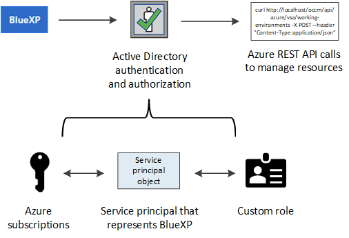
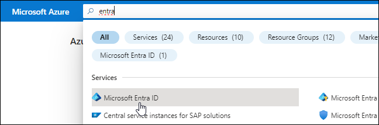
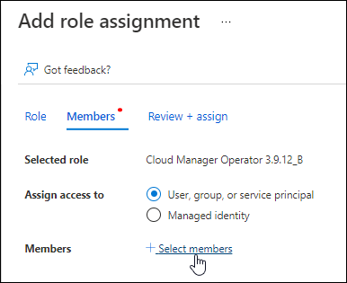

Versionshinweise
Versionshinweise
Azure Zugangsdaten und Marketplace-Abonnements für BlueXP managen
 Änderungen vorschlagen
Änderungen vorschlagen
Hinzufügen und Managen von Azure-Anmeldeinformationen, um zu ermöglichen, dass BlueXP über die erforderlichen Berechtigungen zum Implementieren und Managen von Cloud-Ressourcen in Ihren Azure Abonnements verfügt. Wenn Sie mehrere Azure Marketplace-Abonnements verwalten, können Sie jedes davon auf der Seite „Anmeldeinformationen“ verschiedenen Azure Zugangsdaten zuweisen.
Folgen Sie den Schritten auf dieser Seite, wenn Sie mehrere Azure Zugangsdaten oder mehrere Azure Marketplace Abonnements für Cloud Volumes ONTAP verwenden möchten.
Überblick
Es gibt zwei Möglichkeiten, in BlueXP zusätzliche Azure-Abonnements und Anmeldedaten hinzuzufügen.
-
Verknüpfen Sie zusätzliche Azure-Abonnements mit der von Azure verwalteten Identität.
-
Wenn Sie Cloud Volumes ONTAP mit unterschiedlichen Azure Zugangsdaten bereitstellen möchten, erteilen Sie Azure Berechtigungen unter Verwendung eines Service-Principal und fügen dessen Zugangsdaten BlueXP hinzu.
Zuordnen zusätzlicher Azure-Abonnements zu einer gemanagten Identität
Mit BlueXP können Sie die Azure Zugangsdaten und das Azure Abonnement auswählen, in dem Sie Cloud Volumes ONTAP bereitstellen möchten. Sie können kein anderes Azure-Abonnement für das verwaltete Identitätsprofil auswählen, es sei denn, Sie verknüpfen das "Verwaltete Identität" Mit diesen Abonnements.
Eine verwaltete Identität ist "Zunächst das Azure-Konto" Wenn Sie einen Connector von BlueXP bereitstellen. Wenn Sie den Connector bereitgestellt haben, hat BlueXP die Rolle BlueXP Operator erstellt und der virtuellen Connector-Maschine zugewiesen.
-
Melden Sie sich beim Azure Portal an.
-
Öffnen Sie den Dienst Abonnements und wählen Sie dann das Abonnement aus, in dem Sie Cloud Volumes ONTAP bereitstellen möchten.
-
Wählen Sie Access Control (IAM).
-
Wählen Sie Hinzufügen > Rollenzuweisung hinzufügen und fügen Sie dann die Berechtigungen hinzu:
-
Wählen Sie die Rolle BlueXP Operator aus.

BlueXP Operator ist der Standardname, der in der Connector-Richtlinie angegeben ist. Wenn Sie einen anderen Namen für die Rolle ausgewählt haben, wählen Sie stattdessen diesen Namen aus. -
Weisen Sie einer virtuellen Maschine Zugriff zu.
-
Wählen Sie das Abonnement aus, in dem die virtuelle Connector-Maschine erstellt wurde.
-
Wählen Sie die virtuelle Verbindungsmaschine aus.
-
Wählen Sie Speichern.
-
-
-
Wiederholen Sie diese Schritte für weitere Abonnements.
Wenn Sie eine neue Arbeitsumgebung erstellen, sollten Sie nun über mehrere Azure-Abonnements für das verwaltete Identitätsprofil verfügen.

Zusätzliche Azure Zugangsdaten zu BlueXP hinzufügen
Wenn Sie einen Connector von BlueXP bereitstellen, aktiviert BlueXP eine vom System zugewiesene verwaltete Identität auf der virtuellen Maschine, die über die erforderlichen Berechtigungen verfügt. BlueXP wählt diese Azure-Anmeldedaten standardmäßig aus, wenn Sie eine neue Arbeitsumgebung für Cloud Volumes ONTAP erstellen.

|
Ein erster Satz von Anmeldeinformationen wird nicht hinzugefügt, wenn Sie die Connector-Software manuell auf einem vorhandenen System installiert haben. "Informationen zu Azure Zugangsdaten und Berechtigungen". |
Wenn Sie Cloud Volumes ONTAP mit different Azure-Anmeldeinformationen bereitstellen möchten, müssen Sie die erforderlichen Berechtigungen erteilen, indem Sie für jedes Azure-Konto einen Dienstprinzipal in der Microsoft Entra-ID erstellen und einrichten. Anschließend können Sie die neuen Anmeldeinformationen zu BlueXP hinzufügen.
Erteilen Sie Azure Berechtigungen mithilfe eines Service-Prinzipals
Für Aktionen in Azure benötigt BlueXP Berechtigungen. Sie können einem Azure-Konto die erforderlichen Berechtigungen erteilen, indem Sie in der Microsoft Entra-ID einen Service-Principal erstellen und einrichten und die für BlueXP erforderlichen Azure-Zugangsdaten erhalten.
Die folgende Abbildung zeigt, wie BlueXP Berechtigungen zur Durchführung von Operationen in Azure erhält. Ein Service-Principal-Objekt, das an ein oder mehrere Azure-Abonnements gebunden ist, repräsentiert BlueXP in der Microsoft Entra ID und wird einer benutzerdefinierten Rolle zugewiesen, die die erforderlichen Berechtigungen erlaubt.

Erstellen Sie eine Microsoft Entra-Anwendung
Erstellen Sie ein Microsoft Entra-Applikations- und Serviceprinzip, das BlueXP für die rollenbasierte Zugriffssteuerung verwenden kann.
-
Stellen Sie sicher, dass Sie in Azure über die Berechtigungen zum Erstellen einer Active Directory-Anwendung und zum Zuweisen der Anwendung zu einer Rolle verfügen.
Weitere Informationen finden Sie unter "Microsoft Azure-Dokumentation: Erforderliche Berechtigungen"
-
Öffnen Sie im Azure-Portal den Dienst Microsoft Entra ID.

-
Wählen Sie im Menü App-Registrierungen.
-
Wählen Sie Neue Registrierung.
-
Geben Sie Details zur Anwendung an:
-
Name: Geben Sie einen Namen für die Anwendung ein.
-
Kontotyp: Wählen Sie einen Kontotyp aus (jeder kann mit BlueXP verwendet werden).
-
Redirect URI: Sie können dieses Feld leer lassen.
-
-
Wählen Sie Registrieren.
Sie haben die AD-Anwendung und den Service-Principal erstellt.
Sie haben die AD-Anwendung und den Service-Principal erstellt.
Anwendung einer Rolle zuweisen
Sie müssen den Service-Principal an ein oder mehrere Azure-Abonnements binden und ihm die benutzerdefinierte Rolle „BlueXP Operator“ zuweisen, damit BlueXP über Berechtigungen in Azure verfügt.
-
Erstellen einer benutzerdefinierten Rolle:
Beachten Sie, dass Sie eine benutzerdefinierte Azure-Rolle über das Azure-Portal, Azure PowerShell, Azure CLI oder REST-API erstellen können. Die folgenden Schritte zeigen, wie Sie die Rolle mithilfe der Azure-CLI erstellen. Wenn Sie eine andere Methode verwenden möchten, finden Sie weitere Informationen unter "Azure-Dokumentation"
-
Kopieren Sie den Inhalt des "Benutzerdefinierte Rollenberechtigungen für den Konnektor" Und speichern Sie sie in einer JSON-Datei.
-
Ändern Sie die JSON-Datei, indem Sie dem zuweisbaren Bereich Azure-Abonnement-IDs hinzufügen.
Sie sollten die ID für jedes Azure Abonnement hinzufügen, aus dem Benutzer Cloud Volumes ONTAP Systeme erstellen.
Beispiel
"AssignableScopes": [ "/subscriptions/d333af45-0d07-4154-943d-c25fbzzzzzzz", "/subscriptions/54b91999-b3e6-4599-908e-416e0zzzzzzz", "/subscriptions/398e471c-3b42-4ae7-9b59-ce5bbzzzzzzz" -
Verwenden Sie die JSON-Datei, um eine benutzerdefinierte Rolle in Azure zu erstellen.
In den folgenden Schritten wird beschrieben, wie die Rolle mithilfe von Bash in Azure Cloud Shell erstellt wird.
-
Starten "Azure Cloud Shell" Und wählen Sie die Bash-Umgebung.
-
Laden Sie die JSON-Datei hoch.

-
Verwenden Sie die Azure CLI, um die benutzerdefinierte Rolle zu erstellen:
az role definition create --role-definition Connector_Policy.jsonSie sollten nun eine benutzerdefinierte Rolle namens BlueXP Operator haben, die Sie der virtuellen Connector-Maschine zuweisen können.
-
-
-
Applikation der Rolle zuweisen:
-
Öffnen Sie im Azure-Portal den Service Abonnements.
-
Wählen Sie das Abonnement aus.
-
Wählen Sie Zugriffskontrolle (IAM) > Hinzufügen > Rollenzuweisung hinzufügen.
-
Wählen Sie auf der Registerkarte role die Rolle BlueXP Operator aus und wählen Sie Next aus.
-
Führen Sie auf der Registerkarte Mitglieder die folgenden Schritte aus:
-
Benutzer, Gruppe oder Serviceprincipal ausgewählt lassen.
-
Wählen Sie Mitglieder auswählen.

-
Suchen Sie nach dem Namen der Anwendung.
Hier ein Beispiel:

-
Wählen Sie die Anwendung aus und wählen Sie Select.
-
Wählen Sie Weiter.
-
-
Wählen Sie Überprüfen + Zuweisen.
Der Service-Principal verfügt jetzt über die erforderlichen Azure-Berechtigungen zur Bereitstellung des Connectors.
Wenn Sie Cloud Volumes ONTAP aus mehreren Azure Subscriptions bereitstellen möchten, müssen Sie den Service-Prinzipal an jedes dieser Subscriptions binden. Mit BlueXP können Sie das Abonnement auswählen, das Sie bei der Bereitstellung von Cloud Volumes ONTAP verwenden möchten.
-
Fügen Sie Windows Azure Service Management-API-Berechtigungen hinzu
Der Service-Principal muss über die Berechtigungen „Windows Azure Service Management API“ verfügen.
-
Wählen Sie im Microsoft Entra ID-Dienst App-Registrierungen aus und wählen Sie die Anwendung aus.
-
Wählen Sie API-Berechtigungen > Berechtigung hinzufügen.
-
Wählen Sie unter Microsoft APIs Azure Service Management aus.

-
Wählen Sie Zugriff auf Azure Service Management als Benutzer der Organisation und dann Berechtigungen hinzufügen.

Holen Sie die Anwendungs-ID und die Verzeichnis-ID ab
Wenn Sie das Azure-Konto zu BlueXP hinzufügen, müssen Sie die Anwendungs-ID (Client) und die Verzeichnis-ID (Mandant) für die Anwendung angeben. BlueXP verwendet die IDs, um sich programmatisch anzumelden.
-
Wählen Sie im Microsoft Entra ID-Dienst App-Registrierungen aus und wählen Sie die Anwendung aus.
-
Kopieren Sie die Application (Client) ID und die Directory (Tenant) ID.

Wenn Sie das Azure-Konto zu BlueXP hinzufügen, müssen Sie die Anwendungs-ID (Client) und die Verzeichnis-ID (Mandant) für die Anwendung angeben. BlueXP verwendet die IDs, um sich programmatisch anzumelden.
Erstellen Sie einen Clientschlüssel
Sie müssen einen Client Secret erstellen und BlueXP dann den Wert des Geheimnisses bereitstellen, damit BlueXP ihn zur Authentifizierung mit Microsoft Entra ID verwenden kann.
-
Öffnen Sie den Dienst Microsoft Entra ID.
-
Wählen Sie App-Registrierungen und wählen Sie Ihre Anwendung aus.
-
Wählen Sie Zertifikate & Geheimnisse > Neues Kundengeheimnis.
-
Geben Sie eine Beschreibung des Geheimnisses und eine Dauer an.
-
Wählen Sie Hinzufügen.
-
Kopieren Sie den Wert des Clientgeheimnisses.

Jetzt haben Sie einen Client-Schlüssel, den BlueXP zur Authentifizierung mit Microsoft Entra ID verwenden kann.
Ihr Service-Principal ist jetzt eingerichtet und Sie sollten die Anwendungs- (Client-)ID, die Verzeichnis- (Mandanten-)ID und den Wert des Clientgeheimnisses kopiert haben. Sie müssen diese Informationen in BlueXP eingeben, wenn Sie ein Azure-Konto hinzufügen.
Zugangsdaten zu BlueXP hinzufügen
Nachdem Sie ein Azure-Konto mit den erforderlichen Berechtigungen angegeben haben, können Sie die Anmeldedaten für dieses Konto bei BlueXP hinzufügen. Durch diesen Schritt können Sie Cloud Volumes ONTAP mit unterschiedlichen Azure Zugangsdaten starten.
Falls Sie diese Zugangsdaten gerade bei Ihrem Cloud-Provider erstellt haben, kann es einige Minuten dauern, bis sie zur Verwendung verfügbar sind. Warten Sie einige Minuten, bevor Sie BlueXP die Anmeldeinformationen hinzufügen.
Sie müssen einen Konnektor erstellen, bevor Sie BlueXP-Einstellungen ändern können. "Erfahren Sie, wie Sie einen Konnektor erstellen".
-
Klicken Sie oben rechts auf der BlueXP Konsole auf das Symbol Einstellungen, und wählen Sie Credentials aus.

-
Wählen Sie Anmeldeinformationen hinzufügen und folgen Sie den Schritten im Assistenten.
-
Anmeldeort: Wählen Sie Microsoft Azure > Connector.
-
Credentials definieren: Geben Sie Informationen über den Microsoft Entra-Dienst-Prinzipal ein, der die erforderlichen Berechtigungen gewährt:
-
Anwendungs-ID (Client)
-
ID des Verzeichnisses (Mandant)
-
Client-Schlüssel
-
-
Marketplace-Abonnement: Verknüpfen Sie diese Anmeldedaten mit einem Marketplace-Abonnement, indem Sie jetzt abonnieren oder ein vorhandenes Abonnement auswählen.
-
Review: Bestätigen Sie die Details zu den neuen Zugangsdaten und wählen Sie Add.
-
Auf der Seite Details und Anmeldeinformationen können Sie nun zu verschiedenen Anmeldeinformationen wechseln "Beim Erstellen einer neuen Arbeitsumgebung"

Vorhandene Anmeldedaten verwalten
Verwalten Sie die Azure-Anmeldedaten, die Sie BlueXP bereits hinzugefügt haben, indem Sie ein Marketplace-Abonnement zuordnen, Anmeldedaten bearbeiten und löschen.
Azure Marketplace Abonnement mit Anmeldedaten verknüpfen
Nachdem Sie Ihre Azure Zugangsdaten zu BlueXP hinzugefügt haben, können Sie diesen Anmeldedaten ein Azure Marketplace Abonnement zuordnen. Mit dem Abonnement können Sie ein Pay-as-you-go Cloud Volumes ONTAP System erstellen und andere BlueXP Services nutzen.
Es gibt zwei Szenarien, in denen Sie ein Azure Marketplace-Abonnement verknüpfen können, nachdem Sie BlueXP bereits die Zugangsdaten hinzugefügt haben:
-
Sie haben ein Abonnement nicht zugeordnet, wenn Sie die Anmeldeinformationen zu BlueXP hinzugefügt haben.
-
Sie möchten das Abonnement für Azure Marketplace ändern, das mit den Azure-Anmeldedaten verknüpft ist.
Durch den Austausch des aktuellen Marketplace-Abonnements durch ein neues Abonnement wird das Marketplace-Abonnement für alle bestehenden Cloud Volumes ONTAP Arbeitsumgebungen und alle neuen Arbeitsumgebungen geändert.
Sie müssen einen Konnektor erstellen, bevor Sie BlueXP-Einstellungen ändern können. "Erfahren Sie, wie".
-
Klicken Sie oben rechts auf der BlueXP Konsole auf das Symbol Einstellungen, und wählen Sie Credentials aus.
-
Wählen Sie das Aktionsmenü für einen Satz von Anmeldeinformationen und dann Associate Subscription.
Sie müssen Anmeldeinformationen auswählen, die einem Connector zugeordnet sind. Sie können kein Marketplace-Abonnement mit Anmeldedaten verknüpfen, die mit BlueXP verknüpft sind.

-
Um die Anmeldeinformationen einem bestehenden Abonnement zuzuordnen, wählen Sie das Abonnement aus der Down-Liste aus und wählen Associate aus.
-
Um die Anmeldeinformationen einem neuen Abonnement zuzuordnen, wählen Sie Abonnement hinzufügen > Weiter und befolgen Sie die Schritte im Azure Marketplace:
-
Melden Sie sich bei Ihrem Azure-Konto an, wenn Sie dazu aufgefordert werden.
-
Wählen Sie Abonnieren.
-
Füllen Sie das Formular aus und wählen Sie Abonnieren.
-
Wählen Sie nach Abschluss des Abonnements Konto jetzt konfigurieren aus.
Sie werden auf die BlueXP-Website umgeleitet.
-
Auf der Seite Subscription Assignment:
-
Wählen Sie die BlueXP Konten aus, mit denen Sie dieses Abonnement verknüpfen möchten.
-
Wählen Sie im Feld vorhandenes Abonnement ersetzen aus, ob Sie das vorhandene Abonnement für ein Konto automatisch durch dieses neue Abonnement ersetzen möchten.
BlueXP ersetzt das vorhandene Abonnement für alle Anmeldeinformationen im Konto durch dieses neue Abonnement. Wenn eine Gruppe von Anmeldeinformationen noch nicht mit einem Abonnement verknüpft wurde, wird dieses neue Abonnement nicht mit diesen Anmeldedaten verknüpft.
Bei allen anderen Konten müssen Sie das Abonnement manuell verknüpfen, indem Sie die folgenden Schritte wiederholen.
-
Wählen Sie Speichern.
Im folgenden Video sehen Sie, wie Sie im Azure Marketplace abonnieren:
-
Abonnieren Sie BlueXP über den Azure Marketplace -
Anmeldedaten bearbeiten
Bearbeiten Sie Ihre Azure-Anmeldedaten in BlueXP, indem Sie die Details zu Ihren Azure-Serviceanmeldeinformationen ändern. Sie müssen beispielsweise den Clientschlüssel aktualisieren, wenn ein neues Geheimnis für die Service-Hauptanwendung erstellt wurde.
-
Klicken Sie oben rechts auf der BlueXP Konsole auf das Symbol Einstellungen, und wählen Sie Credentials aus.
-
Wählen Sie auf der Seite Account Credentials das Aktionsmenü für einen Satz von Anmeldeinformationen aus und wählen Sie dann Credentials bearbeiten.
-
Nehmen Sie die erforderlichen Änderungen vor und wählen Sie dann Anwenden.
Anmeldeinformationen löschen
Wenn Sie keine Anmeldedaten mehr benötigen, können Sie diese aus BlueXP löschen. Sie können nur Anmeldeinformationen löschen, die nicht mit einer Arbeitsumgebung verknüpft sind.
-
Klicken Sie oben rechts auf der BlueXP Konsole auf das Symbol Einstellungen, und wählen Sie Credentials aus.
-
Wählen Sie auf der Seite Account Credentials das Aktionsmenü für einen Satz von Anmeldeinformationen aus und wählen Sie dann Credentials löschen.
-
Wählen Sie Löschen, um zu bestätigen.